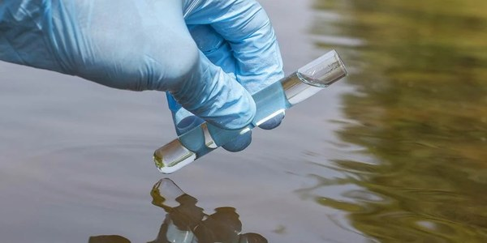
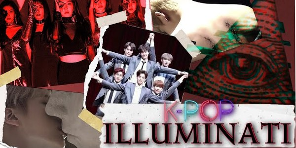

ZENCHOU — The Projector's Guild would like you to believe its success is natural. That it simply does what it does best, and reaps its rewards from the world. After months of watching the guild, and one sit-down interview with one of its highest-ranking members, this reporter is no longer sure that is the whole story... and our readers shouldn't be either.
Thirty Percent and Climbing
Start with the number. By this outlet's count, the Projector's Guild now owns close to 30% of the business-related infrastructure in Zenchou. Nearly one in every three storefronts, offices and commercial properties in this city answers, one way or another, to the guild.
So how did it get there?
Part of the story goes back to late 2015. That winter, Joon Park, of the Park clan that has always held the guild up, acquired water resources and began a water purification project. Few things the guild has done have earned it more goodwill.
Clean water for everyone. It is hard to find fault with that... which may be exactly the point.

Two years later, the guild was growing faster than anyone could explain. Other organizations in this city have grown quickly too, but their growth can be traced: you can follow the money. The Projector's Guild's cannot. It feels unnatural. By the end of 2017 it had entered what can only be described as a Golden Age, recruiting countless new members during a stretch when its own founder, Park Yun-Jin, was nowhere to be seen. Nobody seems able to point to why.
This past February, the first hint of an answer began moving through Zenchou's streets: Project Torukia, said to be Park Yun-Jin's masterpiece, and tied to the Affinity Samples the guild has spent years collecting.
Then, on April 24th, the Kiseki Association disaster handed the guild its first real stumble in more than three years: a 2.6% drop in its stock and economic gains. In most markets, that is a bad week. Sources close to the guild describe its members as being in outright disarray. With the guild on its back foot for once, this reporter went looking for answers.
In the Guild's Own Words
High Stakes Media went straight to the source. Suigin, who introduced himself on camera as the guild's Manager of Combat Operations in Zenchou, agreed to sit down with this reporter. According to him, he has been with the guild for almost a year.
We put it to him plainly. Torukia is understood to be a project built on the mass sampling of Affinities, a well-known capability of Demis to enhance their Kido. Why would the Parks need so many? And does it have anything to do with the guild's success in business?
Suigin confirmed the first part. "You're on point with the project," he said. "The goal of it is to broaden its use with Kido. The guild's main specialty, other than the arts, is Kido, and we try to experiment and create new ways of using it."
The second part, he denied outright. "Torukia has nothing to do with business," he told us. "We just do what we do best naturally. Torukia is really a project for creating the next evolution of Kido."
The next evolution of Kido. Hold onto that phrase.
We asked him about the rumors that have followed Torukia since its earliest days, when it was only a whisper on the streets: that it promises a revolution in how Kido is used, one only the Park will ever use, to further their control and influence over the world. He called it "all a misunderstanding."
"I'm aware of how some Soulborn are," he said. "But most can be reasoned with and talked to. The Parks are just people who like to see things from a wider perspective." He went on: "There are bigger problems than thinking the Parks will further their influence and control on the world. It's more about their taste, and the kind of impact they have on the business part of the world. Most of the rumors pertain to petty arguments and rivalry."
Then we asked about the use of the esoteric energy known as Essence. Here, for the first time, Suigin, as a representative of the guild, confirmed it.
"It does have some use of Essence in it," Suigin said. "With samples, you are limited to what you can do with them. But with Torukia, I believe that with applied Essence, we can go further beyond, and have more possibilities."
And on where things stand: "Given the progress we have made, I'm sure the results will soon be even greater."
"Torukia is really a project for creating the next evolution of Kido." — Suigin, Manager of Combat Operations, Projector's Guild
What Wasn't Said
Read those answers again. Not for what they say, but for what they don't.
When asked whether Torukia exists to expand the Parks' control over the world, Suigin did not say no. He said there were bigger problems than that. He said it was about their taste, and their impact. That is not a denial. It is a suggestion that we stop worrying about it.
He told us Torukia has nothing to do with business. In the same breath, he told us the guild's success comes "naturally." Our readers can decide for themselves how natural it is to own a third of a city while nobody can explain how.
And then there is the detail this reporter has not stopped thinking about since.
Suigin is not a Soulborn. He told us so himself. And yet, in his own words: "I can use some of it." He was talking about Kido.
Kido has long been understood as the domain of the Soulborn. Here is a human man, a Spiritualist outside of the Park bloodline, telling us, casually, that he wields it. Now remember what the rumors say Torukia is: a revolution in how Kido is used, one the Park have already reached. Remember what Suigin called it: the next evolution of Kido. And remember that it runs on Affinities sampled from the people of this city, pushed "further beyond" with Essence.
High Stakes Media will not claim to know what Torukia is. But we will ask the question plainly. If the Parks can hand Kido to people who were never meant to wield it... What else are they capable of?
The Clan Behind the Curtain
On the street, people have started giving the Park clan a name. Not in their hearing, of course. They call them Zenchou's own "Otherworld Illuminati."

It is easy to laugh off. It gets harder the longer you look at what this one family touches.
- Commerce: more than 30% of the city's business infrastructure, through the guild they hold up.
- Torukia: a project utilizing the manipulation of Essence, the very energy of the Soul, to revolutionize Kido to some unknown end.
- Reputation: when the guild stumbles, a Park steps in, and the headlines turn kind again.
This reporter is not saying the Parks are part of some secret society conspiring to run Zenchou from behind the scenes. We are simply saying that if they were one, it is difficult to imagine what they would be doing differently.
Questions Zenchou Should Be Asking
High Stakes Media does not have every answer. We do have questions, and we think our readers should be asking them too.
- If Torukia has nothing to do with business, why can nobody explain the guild's growth?
- Whose Affinities are in the guild's samples, and did those people ever agree to what they are being used for?
- What exactly does "applied Essence" mean, and what does the guild aim to do with it?
- If a non-Soulborn can already use Kido, who else has been given it, and who chose them?
- Why does a guild known for the arts and Kido need its own water supply, and what exactly is being purified?
When this reporter thanked Suigin for his time, he had told us the results of Torukia would "soon be even greater." We believe him. That is exactly what worries us.
This reporter intends to keep looking for answers to all these questions, and more. Have a tip? Reach High Stakes Media on SuperNat at %Gambling_Queen.